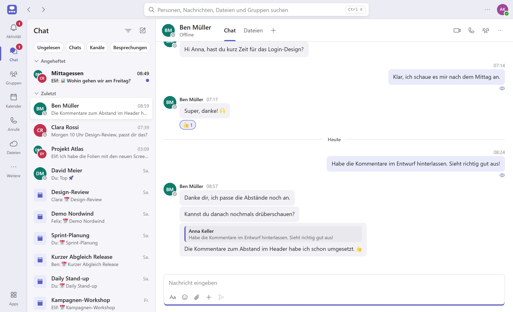
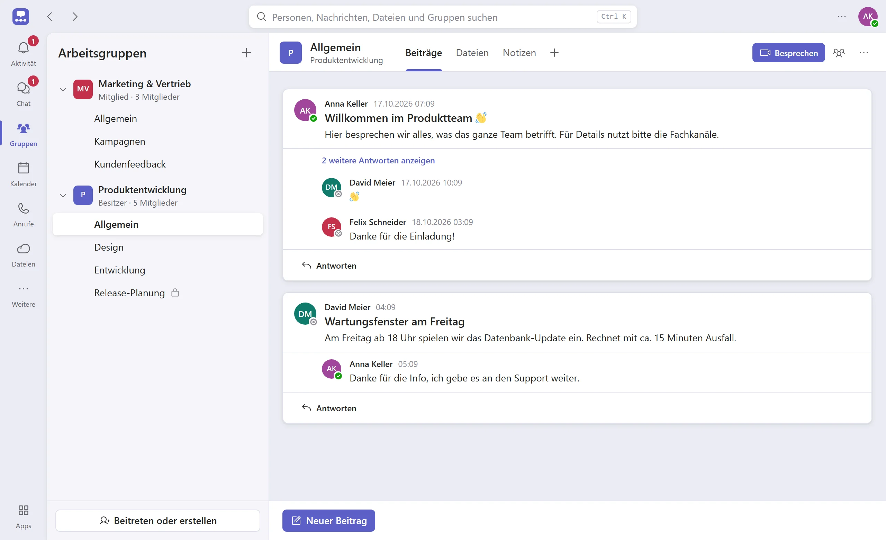

Chats
Einzel- und Gruppenchats in Echtzeit, mit Antworten, Reaktionen, @-Erwähnungen, Formatierung und Lesebestätigung.
Hallo vereint Chats, Arbeitsgruppen, Video-Anrufe, Kalender und Dateien in einer App. Der Server läuft bei dir: auf einem Computer im Büro oder auf deinem eigenen Server.
Kostenlos für Windows, macOS und Linux
Andere Systeme und Installation per Befehl: alle Downloads

Statt fünf verschiedener Dienste eine App, die sich anfühlt wie die Werkzeuge, die ihr kennt.
Einzel- und Gruppenchats in Echtzeit, mit Antworten, Reaktionen, @-Erwähnungen, Formatierung und Lesebestätigung.
Projekte und Themen in Kanälen mit Beiträgen und Antworten. Rollen für Besitzer, Mitglieder und Gäste.
Audio- und Videoanrufe, Bildschirm teilen, Hintergrund weichzeichnen, Hand heben und Reaktionen.
Tag, Arbeitswoche, Woche und Monat. Besprechungen planen, Einladungen beantworten und mit einem Klick teilnehmen.
Dateien in Chats und Kanälen teilen, mit Bildvorschau und einer Übersicht aller Dateien an einem Ort.
Erwähnungen und Antworten im Aktivitätsfeed, Benachrichtigungen und eine Suche über alles mit Ctrl+K.
Arbeitsgruppen bündeln die Kanäle eines Teams. Jeder Beitrag hat seine Antworten direkt darunter, so bleiben Diskussionen beieinander.

Keine Cloud-Konten, keine Kreditkarte. Ein Computer im Netzwerk genügt.
Den Installer für Windows, macOS oder Linux herunterladen, oder mit einem einzigen Befehl im Terminal installieren.
Beim ersten Start fragt Hallo, ob dieser Computer der Server sein soll oder ob sich die App mit einem bestehenden Server verbindet.
Kolleginnen und Kollegen installieren Hallo, geben die Server-Adresse ein und legen ihr Konto an. Fertig.
Nachrichten, Dateien und Termine liegen in der Datenbank auf deinem Server, nicht bei uns und nicht bei Dritten.
Hallo läuft auf einem Computer in deinem Büro oder auf deinem eigenen Server. Du entscheidest, wer Zugang hat.
Die App sendet keine Nutzungsdaten. Emojis und der Hintergrund-Weichzeichner sind eingebaut und werden nicht aus dem Internet geladen.
Zu jeder Version gibt es SHA-256-Prüfsummen. Die Installationsbefehle installieren nur, wenn die Prüfsumme stimmt.
Kostenlos für Windows, macOS und Linux.
Oder in der PowerShell installieren:
irm https://ilianburri.github.io/Chat-App/install.ps1 | iex
Oder im Terminal installieren (macOS und Linux):
curl -fsSL https://ilianburri.github.io/Chat-App/install.sh | sh